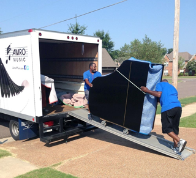

Professional Piano Moving, Storing, And Maintenance Service Accross The States.
CONTACT US
The Shifflet's Moving is a full-service specialty moving company started in Spring Lake Park, MN. We’re the team you can count on to safely move your piano or organ, as well as other heavyweight specialty items such as safes.
No job is too big or too small! Established in 1983 by Robert Shifflet and Solomon Shifflet, we’ve been proudly serving Minnesota homeowners, churches, theaters, and schools for nearly 40 years. Call us today to learn more and get a free estimate!
At Shifflet’s Piano Moving, moving pianos is our specialty. We can advise you on how to prepare your piano or organ for transit, and we’ll use our equipment and expertise to move it securely. Whether you need your piano temporarily removed from your home while you remodel, or taken to a different location for an event or transfer of ownership, we’ve got you covered. We even offer secure, temperature-controlled storage options for pianos with daily and monthly rates available.
Our professional team is also equipped to move piano and other heavy specialty items,
such as safes, bathtubs, or radiators. These larger objects are notoriously
difficult to move and are uniquely valuable.Whether you’re looking for someone to tune your piano after the move or someone to help with maintenance and refinishing, we can recommend the following local businesses. These are experienced professionals we and our customers have come to trust!
We are experts in moving pianos and organs, whether within your home or from one location to another. Contact us today for help with piano moving in any situation

Location, of course, will also determine the price of delivery, whether it is for a move from one building to another across town, or a piano being delivered from our store to your location.
If you are looking for an interstate OR international move/delivery, there will be significant additional charges and we will work with one or various freight companies to deliver your instrument to you. State and customs taxes will apply, and our movers will notify you of this.